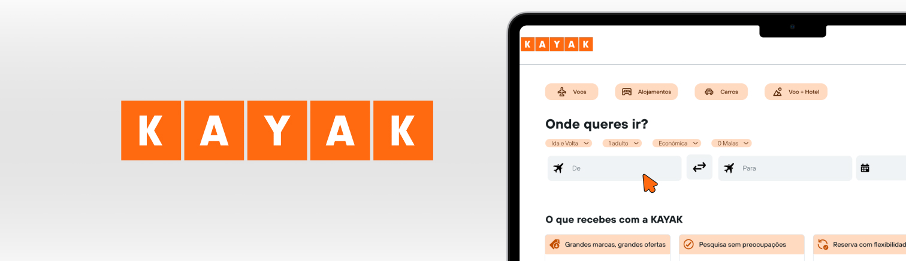
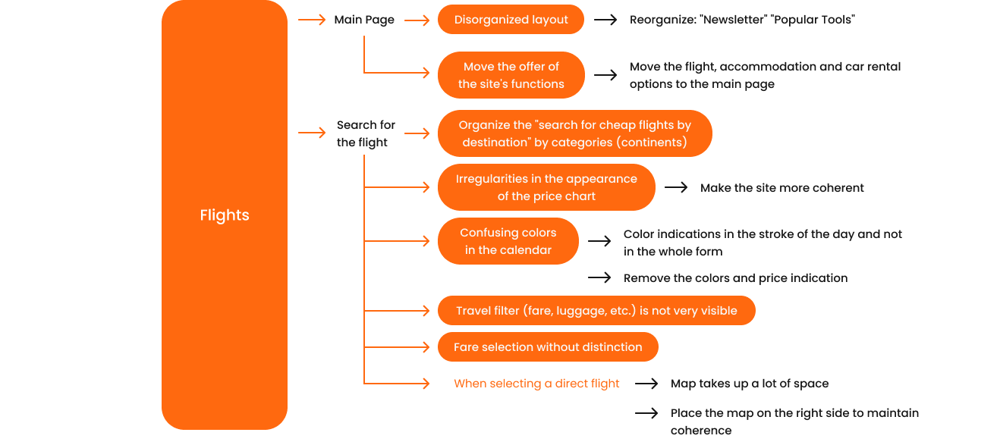
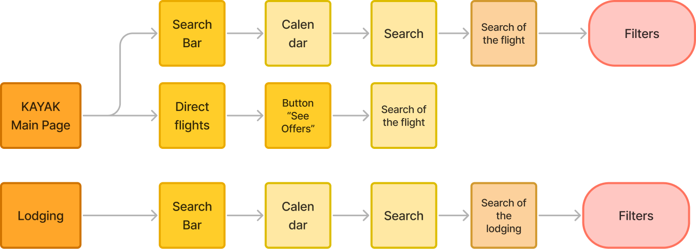

Kayak - Website Redesign
The re-design of the Kayak website aimed to improve accessibility and usability, and for that to be possible usability tests were carried out to find the website's main problems and prepare it for a better version.
Group Project: Daniela Teodoro | Frederica Sonso | Joana Santos
Methodology: Accessibility Study | Usability Tests Mind Map | Flowchart | Wireframes | Development and Testing | Improvements Implementation
The different scenarios
1º Scenario
- Find accommodation in Algarve, next weekend, for 4 adults;
- Select the filter that shows places that allow pets;
- See more price comparisons for a room, still on the Kayak website;
- See the reviews;
- Book the room.
2º Scenario
- Find the cheapest direct flight Lisbon-Paris (round trip; economy), for 1 student, with a hand luggage, in the next 3 months.
3º Scenario
- Rent a car for the next day, entering your age for the next two days;
- Use the filters to select: hybrid electric cars, insurance of your choice and the option to pay when you collect the car.
4º Scenario
- On the flights page, in the direct flights area, find the Madrid page;
- After entering the page look at prices;
- Look at the first offer.
5º Scenario
Narrator for blind people- On the Accommodation page, search for Accommodation near you / Hotels favorites from around the world;
- Choose the first one.
Identifying the problems and solving them
Flowchart
Wireframes Testing
1º Scenario
- Using the search bar, search for a flight (in the calendar select the days with the cheapest price).
Avg. duration: 45.8s
1 tester got lost